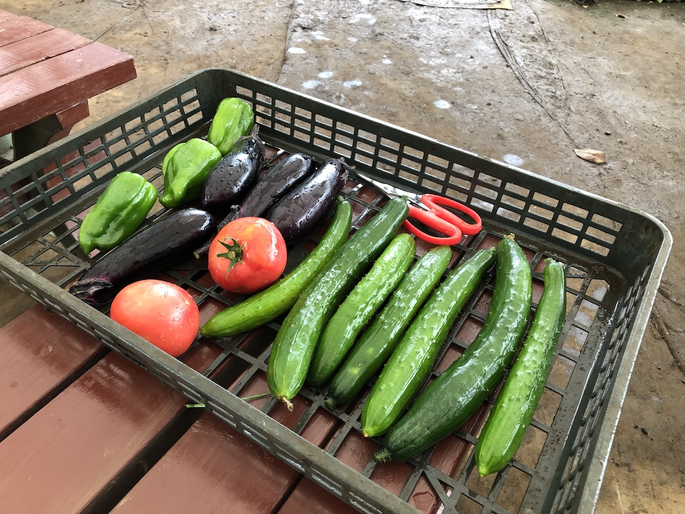

市民農園のすゝめ － 都会ではじめる農的生活
2019.07.28
東京23区生まれ23区育ち・都会っ子の「ふじわらふうき」と言います。
東京の実家で家族と暮らす大学４年生です。
そんな都会っ子の僕ですが、農学部に進学したことをきっかけに農作業にはまり、今では半ば「農的生活」を楽しんでいます。
研究室での栽培試験やAgrlienでの活動（こちらをチェック）も、そんな農業に触れ合う楽しい機会です。
が、今回は、それとは別に僕がはまっている、“市民農園” の魅力について、紹介してみたいと思います。
私が実際に農作業を行なっている市民農園はこちら。
東京都練馬区にある「農と緑の体験塾－加藤農園」。
30平米の区画が150区画以上あり、非常に大きな農園です。
ここでは様々な種類の野菜を栽培することができます。
例えば、こちら。なんの野菜かわかりますか？
夏野菜のズッキーニです。
ではこちらはなんでしょう？
トウモロコシ（の雌花）です。
こんな感じで、他にもトマトやナス、キュウリ、インゲン、じゃがいも、枝豆などなど、いろんな野菜を栽培させてくれます。
とはいえ、いきなり野菜づくりってハードルが高いなと思われるかもしれません。
けれど、そんな心配は無用です。
加藤農園では、野菜の種や苗から肥料や農機具まで全て貸し出しをしてくれます。
なので、資材を自分で準備する必要はなく、ほぼ手ぶらで行って農作業が楽しめるのが、オススメのポイントです。
さらに、オススメなのが、月２〜３回、週末に開講される講習会です。
園主の加藤さん自ら、野菜づくりの基本や実際に作業する際のポイントなどを教えてくれます。
なぜ、こうすべきなのかという根拠の部分をいつも科学的に説明してくれるので、東大農学部生の僕でもとても勉強になっています(笑)
そして、野菜づくりの楽しみといえば、やっぱり新鮮野菜が食べれることでしょう。

実際食べてみると、とても美味しい。
新鮮な野菜の美味しさは、僕のような素人の栽培技術(笑)をカバーして余る美味しさです。
加えて、鮮度が高いほどビタミンなどの栄養価も高いことが知られています。
苦労して栽培した分の美味しさ(?!)も合間って、食事が楽しくなること間違いなしです。
僕は、元々ナスが嫌いで「紫色の野菜なんて食べ物じゃない！」とか思っていたのですが、新鮮ナスの美味しさには負けてしまいました。
今では、日々自分の畑で採れたナスを食べています。
こんな感じで、簡単に紹介してきましたが、興味を持ってくれましたか？
ご夫婦にも、お子様づれにも、そして大学生にも、オススメの市民農園です。
オススメはやっぱり、加藤農園をはじめとする練馬区の農業体験農園(←クリック)
ですが、練馬区以外の方でも、ぜひ近所に市民農園がないか探してみてください。
最近では、「シェア畑」(https://www.sharebatake.com/)という民間のサービスも市民農園に進出してきて、関東・近畿を中心に広がりを見せています。
こちらも手ぶらで行けるサポート付き農園を謳い文句にしていますし、市営・区営農園と違って年中申し込み可能みたいなので、こっちもぜひチェックです。
以上、「貸し農園のすゝめ－都会ではじめる農的生活」でした〜